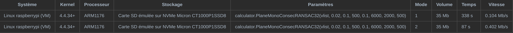

Use a simple, improved and high-speed RANSAC algorithm to analyse planes from a .ply point cloud file
Pre-requisite: Basic knowledge on Golang, point cloud files in .ply and the least square regression method
In this article, we try to use an improved RANSAC algorithm to analyze a cloud point file in .ply format, in order to get equations (ax + by + cz = d) which represent every a plane facade in it. At the mean time, a program 100% in Golang is implemented to read and write information to files in .ply format. Optimizations are done and performance improvements are achieved.
I. Data preparing
The point cloud data used here is collected by an Intel depth device. The relevant methods are discussed in the previous article. In case of using devices other than those fabricated by Intel, modifications should be applied to the program due to the differences in the way that the data and the header are arranged.
Here the data is coded in binary without any space or linefeed, while the header is in ASCII. When reading the file, the header should be parsed first to get useful information such as the quantity of vertices and faces. Then the information is used to read the body of the file.
2. Kernel algorithm
2.1 Start
The essential of RANSAC (Random SAmple Consensus) is to choose some samples randomly to construct a model. If the model satisfies the conditions, it will be kept, otherwise it will be dropped. This process will be repeated until the exit condition is satisfied. In this example, the model to construct is a plane and the samples are 3 points.
First, choose a batch of points randomly among all of the samples. This is to reduce the amount of calculation after in the iteration. A parameter should be given by user to define the number of the points in each batch. This parameter has influence on the time and the quality of the calculation.
// pick a batch of n vertices randomly from the vertex slice
vertexBatch := make([]plyfile.VertexMono, 0)
indexBatch := make([]int, 0)
for {
indexRandom := r.Intn(len(vlist))
// check if this vertex is already chosen. If not, append the vertex and its index to the batch
if mymath.ExistIntList(indexBatch, indexRandom) {...}
vertexBatch = append(vertexBatch, vlist[indexRandom])
indexBatch = append(indexBatch, indexRandom)
// end condition
if len(vertexBatch) == volumeBatch {...}
}
2.2 Main iteration
Choose 3 points randomly to form a plane and compute the distance between all each point in the batch and this plane. If a point is enough near to the plane (controlled by a given parameter that defines the distance), it will be considered as an inline point. If the proportion of inline points in the batch surpasses a a given line, that plane will be a considered as validated and fed to the next step, otherwise this step will be repeated. After a given number of repetitions, the plane which has the most inline points will be taken into next step if none of them surpassed the minimal limit of inline points.
// pick 3 vertices randomly
p1 := 0
p2 := 0
p3 := 0
// check if the 3 vertices are different one from another
for {...}
// calculate the inlines for the plane formed by these 3 vertices (if the distance to the plane is inferior to the given threshold, this point would be regarded as inline) and take the score
p := New_p_by_verticesMono(vlist[p1], vlist[p2], vlist[p3])
for _, vertex := range vlist {
if mymath.DistPointPlane(vertex.Ply_x, vertex.Ply_y, vertex.Ply_z, p.A, p.B, p.C, p.D) < minDistance {...}
}
NumIteration += 1
// update the score (inline rate). If there is a higher score, note down the plane and 3 vertices which forms it
score := InlineCount / float64(n)
if score > highscore {...}
// quit condition : the high score surpass the given parameter, or the number of iteration reach the maximal given in parameter too
if NumIteration > minNforLoop && highscore > minScore || NumIteration >= maxNforLoop {...}
}
2.3 General regression
In this step, we compute the distance between each point among the entire sample group and the plane obtained in the last step and get a group of general inline points using the same method and parameter. The general inline points will be removed from the samples for the next iteration. This plane will be put into a pool to be tested its redundancy.
// Fit several points to x plane, using the least square method by solving a linear system Ax=b
. A : matrix of the size n rows and 3 columns. Rows are (xi, yi, 1) in which xi and yi are coordinates x and y of the points
A := mat.NewDense(n, 3, nil)
// B : matrix of the size n rows and 1 columns, (zi), the coordinates z of the points
b := mat.NewDense(n, 1, nil)
// initializing
for i := 0; i < n; i++ {
A.Set(i, 0, vlist[i].Ply_x)
A.Set(i, 1, vlist[i].Ply_y)
A.Set(i, 2, 1)
b.Set(i, 0, vlist[i].Ply_z)
}
// compute : A * x = b --> ATA * x = AT * b --> x = (ATA)^-1 * AT * b
AT := A.T()
// multiply A by AT at the left side to prepare for the inverse
var ATA mat.Dense
ATA.Mul(AT, A)
// compute the inverse
var ATAInv mat.Dense
err := ATAInv.Inverse(&ATA)
if err != nil {
log.Fatalf("A is not invertible: %v", err)
}
var ATAInvAT mat.Dense
ATAInvAT.Mul(&ATAInv, AT)
var X mat.Dense
X.Mul(&ATAInvAT, b)
P := New_p(X.At(0, 0), X.At(1, 0), -1, X.At(2, 0))
return P
2.4 Redundancy test
In this step we will check if there are 2 redundant planes in the pool. For all planes in the pool, we calculate the angle formed by 2 planes. If the angle is smaller than the given value, the 2 planes will be considered parallel. For every 2 parallel planes, we test some point-to-plane distance between them. If the results are small enough, the 2 planes will be considered redundant. For 2 redundant planes, we mix their inline points and use the least square method to generate one common plane.
// check that if the new plane belongs to the same planar facade as one of the planes already obtained. If it is the case, mix the vertices and re-adjust the two planes using least square method
if len(planes) > 0 {
for index, planeObtained := range planes {
// first check : if the angle formed by the two planes are inferior to the given value
// second check : if the average distance from the points forming the old plane and the new plane is inferior to the given value
if mymath.VectorsAngle32(planeObtained.A, planeObtained.B, planeObtained.C, newP.A, newP.B, newP.C) < maxAnglePlanes && planeObtained.DistAvrPointPlaneMono32(vetexInline) < 4 * maxDistance {...}
}
}
// if vetexInline != nil (empty slice) means that no similar planes found, we add the new plane to the slice. Otherwise there was a similar plane
if vetexInline != nil {...}
// remove the inline points from the original slice, color these vertices and move them to a new slice to prepare for the painting
for i, index := range indexInline {
vlist[index], vlist[len(vlist) - 1 - i] = vlist[len(vlist) - 1 - i], vlist[index]
}
vlist = append(vlist[:0], vlist[0:len(vlist) - inlineCount]...)
2.5 Exit condition
We iterate all these steps until the total times of iteration surpasses a given value, or the non-inline points left here are few enough. Then we will return the number of planes generated and their standard equations.
// decide whether the iteration continues
numIter++
if len(vlist) < maxVtoQuit || numIter > iterMax {
ifContinue = false
}
return planes, len(planes), verticesOfPlanes
2.6 Parameters
The main parameters are here below. They need to be adjusted according to the particualt .ply file that to be analysd.
func PlaneMonoConsecRANSAC32(
vlist []plyfile.VertexMono, // the slice which contains all the points fetched from a .ply file
maxDistance float32, // maximal distance between a inline point and its plane
minScoreforRAN float32, // the minimal proportion of inline points that a plane need to have in a batch to be considered as validated
minVforPlane int, // the minimal number of inline points that a plane need to have among all points to be considered as validated
maxAnglePlanes float32, // maximal angle between 2 planes that to be considered as parallel
maxVtoQuit int, // exit condition : the maximal number of points which are not considered inline fot any plane
iterMax int, // exit condition : the maximal number of iterations
volumeBatch int // the size of batch
) ([]Plane32, int, [][]plyfile.VertexMono)
Example of usage ：
Planes, numPlanes, _ := calculator.PlaneMonoConsecRANSAC32(vlist, 0.003,
0.1,
500,
0.1,
50,
80,
500)
3. Data reading
As we started preparing for something that reads the data, we discovered that only existing .ply reader in Golang is based on cgo, which calls functions in an external c++ library. The code of this package is not easy to use nor easy to understand. What's more, function calls to a c++ library may undermine significantly the performance. Thus, we decide to develop a .ply reader based on native Golang. 。
3.1 Parsing header
First, we will want to
for _, i := range lines {
split := strings.Fields(i)
switch split[0] {
// define the format
case "format":
version, _ = strconv.ParseFloat(split[2], 64)
switch split[1] {
case "ascii":
file_type = PLY_ASCII
case "binary_little_endian":
file_type = PLY_BINARY_LE
case "binary_big_endian":
file_type = PLY_BINARY_BE
}
// add comment
case "comment":
comments = append(comments, i[8:])
// add obj_info
case "obj_info":
if len(split) > 1 {
for i := 1; i < len(split); i++ {
obj_info = append(obj_info, split[i])
}
}
// add a new element
case "element":
// if we meet a new element and we have edited the properties of an element : we pack this element and add it in to the slice
if prop_edited == true {
elems = append(elems, *New_element(ele_name, ele_num, props))
prop_edited = false
props = nil
}
ele_name = split[1]
ele_num, _ = strconv.Atoi(split[2])
case "property":
// if this line describes a property list : the second keyword will be "list", the third keyword will describe the type of first data (length of the list) and the fourth keyword for the rest data
var isList, count, typ int
var name string
if split[1] == "list" {
isList = 1
count = TypeConverter(split[2])
typ = TypeConverter(split[3])
name = split[4]
} else {
isList = 0
count = 0
typ = TypeConverter(split[1])
name = split[2]
}
prop := New_property(name, typ, typ, 0, isList, count, count, 0)
props = append(props, *prop)
// indicate whether the property is modified
prop_edited = true
case "end_header":
// we pack the last element and add it in to the slice
elems = append(elems, *New_element(ele_name, ele_num, props))
}
}
3.2 Reading
Generally, there exits 2 ways of encoding for .ply files : ASCII and binary. The former can be read directly while the latter needs to be decoded through a particular procedure. Since files obtained by a Intel device are always encoded in binary mode, this will be the only mode support by our file reader.
if name == "vertex" {
// grab vertex elements
for i := 0; i < num_elems; i++ {
plyfile.PlyGetElement(cplyfile, &vlist[i], unsafe.Sizeof(plyfile.VertexMono{}))
vertices = append(vertices, vlist[i])
}
} else if name == "face" {
// grab face elements
for i := 0; i < num_elems; i++ {
plyfile.PlyGetElement(cplyfile, &flist[i], unsafe.Sizeof(plyfile.FaceReading{}))
// extract integers from binary listst and export to a slice of faces
FaceBuf := plyfile.Face{int(binary.LittleEndian.Uint32(flist[i].Vert1[:])), int(binary.LittleEndian.Uint32(flist[i].Vert2[:])), int(binary.LittleEndian.Uint32(flist[i].Vert3[:]))}
faces = append(faces, FaceBuf)
}
}
For each triple of 3d coordinates, decode according to the proper coding method (Little / Big Endian).
func PlyGetElement(plyfile *PlyFile, element interface{}, size uintptr) {
switch plyfile.file_type {
case PLY_BINARY_LE:
buffbytes := make([]byte, size)
r := bytes.NewReader(buffbytes)
_, _ = plyfile.Fp.Read(buffbytes)
_ = binary.Read(r, binary.LittleEndian, element)
case PLY_BINARY_BE:
buffbytes := make([]byte, size)
r := bytes.NewReader(buffbytes)
_, _ = plyfile.Fp.Read(buffbytes)
_ = binary.Read(r, binary.BigEndian, element)
}
}
A slice containing all the vertices (points) and another for the faces (composed by 3 points) will be returned at the end.
3.3 A first benchmark and optimization
We use pprof to profile the entire program (reading the data and then analyzing). We discovered that reading the data (on the right side here above, the bar plot in yellow) counted for about 1/3 of total time spent, whether there is no massive computation in the code.
After having a further analyze on the code, we found that the reader function make a data transferring for each single point in the .ply file, which means that a huge amount of time is wasted on the communication between the processor and the hard disk, whose delay is considerable.
Therefore, we consider to reduce the communication with the hard disk. We consider to read all data to memory in one function call, then we can manipulate the data directly from the memory, which has far smaller delay than the hard disk. In this way, a remarkable improvement on the performance is waited. We use the code here below to rebuild the data reading function.
if name == "vertex" {
// read all the vertices
vlisthuge := make([]float32, num_elems * 3)
plyfile.PlyGetElementHuge(cplyfile, &vlisthuge, len(vlisthuge) * 4)
vertices = append(vertices, vlisthuge...)
} else if name == "face" {
// read all the faces
flisthuge := make([]byte, num_elems * 13)
_, _ = cplyfile.Fp.Read(flisthuge)
// decode the integers from the memory
for i := 0; i < num_elems; i++ {
f1, f2, f3 := int(binary.LittleEndian.Uint32(flisthuge[i * 13 + 1 : i * 13 + 5])), int(binary.LittleEndian.Uint32(flisthuge[i * 13 + 5 : i * 13 + 9])), int(binary.LittleEndian.Uint32(flisthuge[i * 13 + 9 : i * 13 + 13]))
faces = append(faces, f1, f2, f3)
}
}
We can observe that, with the new reading function, the proportion of time spent by it in reduced to 1.92s from 2.74s. A speedup of 1.43 is achieved even without any optimization or parallelization the computing side.
4. Benchmark
The benchmark here includes the file reading function together with the data processing function. According to the demand of the project, a function which compress the data. Here we use the internal package of Golang, gzip, to do the compression. The detailed result is here below. We observe that use 3 as the compression parameter can lead to a best size/time ratio.

In chapter 3.3, we improved the performance of our data reader function by reducing the access to the hard disk. Here we repeat the similar benchmark on a virtual machine of Raspberry Pi, whose virtual processor is arm1176. This is to study the gain of performance on a platform of a lower computational power. We can see that in such situation, we may have a even higher rate of performance improvement.
5. Concurrency
Considering a such scenario : a file reader is feeding data in .ply files continuously. Since the speed of processing a file is lower than that of collecting that file, files will accumulate and form a huge mountain of unprocessed data.
Meanwhile, the procedure of processing each piece of data is independent one from another. Thus, theoretically, this can be perfectly parallelized according to Amdahl's Law.
if modeProc == 2 {
// modeProc new reader 32 bit
for _, file := range files {
// compose the filename
log.Println(location + file)
// read data
vlist, _ := reader.ReadPLYMono32Huge1(location + file)
// compute planes
Planes, numPlanes, _ := calculator.PlaneMonoConsecRANSAC32(vlist, 0.02, 0.1, 500, 0.1, 6000, 2000, 500)
// output of the data
log.Println("The number of planes detected : ", numPlanes)
for _, i := range Planes {
log.Println(i)
}
log.Println("\n")
go func(file string, location string, wg *sync.WaitGroup) {
defer wg.Done()
errC := Compressor.Compress("/home/liu/Desktop/Stages/gogs/src/dataprocessing/gzoutput/" + file + ".gz", location + file, modeComp)
if errC != nil {
panic(errC)
}
errR := os.Remove(location + file)
if errR != nil {
panic(errR)
}
log.Println("Compressed : ", file)
}(file, location, &wg)
}
}
wg.Wait()
We use goroutines add concurrency to the computation. we lance a goroutine for each .ply file found, without a imposing a limit of the maximal existing goroutines. Another benchmark is done on the x86 platform. With the identical parameters and data, it takes 9.186s to complete the iterations without goroutines concurrency and 3.860s within. The speedup gained by adding the concurrency is about 2.380
As for other optimizations, we tried to replace all 64-bit floats with 32-bit floats, since the ARM architecture on the Raspberry system is based on 32 bits. However, the influence on performance is barely visible. We also tried to replace the square root function of goNum package with a self-made one using the fast square root algorithm, while the gain on performance is even negative.
6. Future work
RANSAC is a simple algorithm, easy to use and to implement, while it has some defaults. First, quality of the result depends on the samples which are chosen randomly. To eliminate the influence of that randomisity, we tend to do more iterations, which undermines the performance. When the structure of the cloud point file is complicated, time needed to achieve a satisfactory result increases rapidly. What's more, there is too many parameters to be set manually which makes it difficult to use.
We think about the possibility to introduce other algorithms such as region-growth or average normal vector estimation.
7. References
https://halshs.archives-ouvertes.fr/halshs-00264839/document Automatic segmentation of building facades using Terrestrial Laser Data
http://hhoppe.com/recon.pdf Surface Reconstruction from Unorganized Points